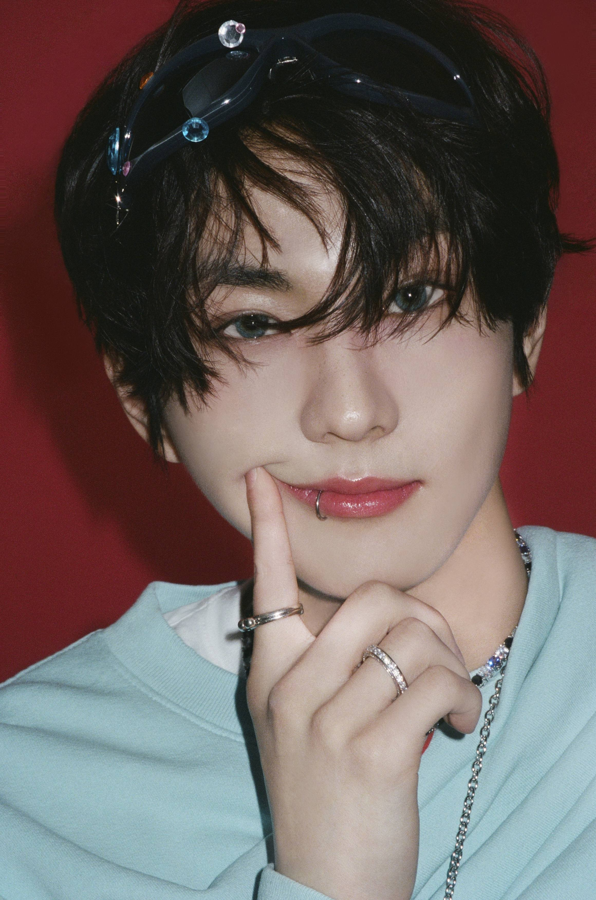
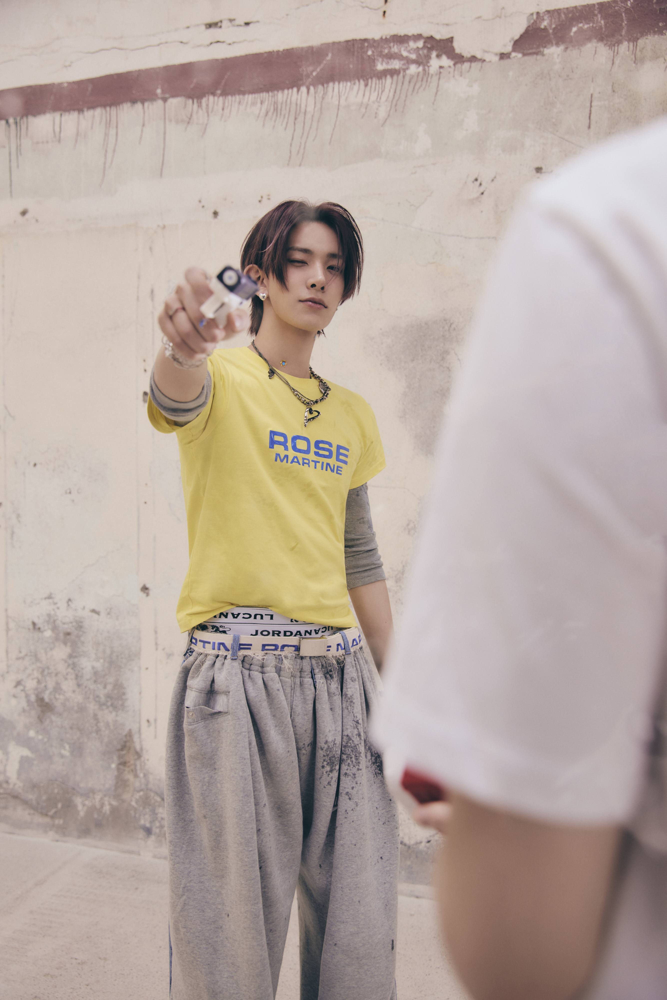
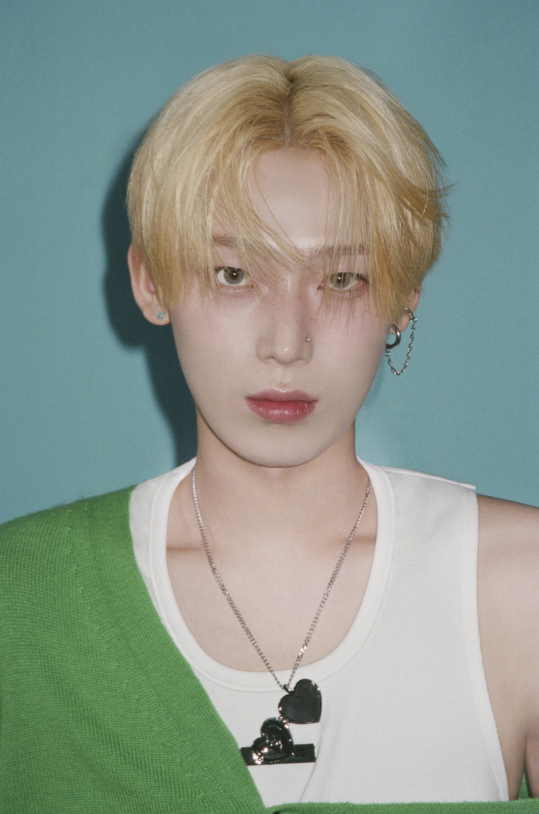

I-LAND
I-LAND was a South Korean reality survival show produced by Mnet and created through the BELIFT:LAB project. Twenty-three male trainees participated in the competition, with seven ultimately selected to debut as ENHYPEN during the live finale on September 18, 2020. The show followed the trainees through intensive training, performances, evaluations, and eliminations over approximately three months. The contestants also lived together under strict rules, with limited contact with the outside world and a highly controlled training environment. These conditions made I-LAND a particularly intense experience for the trainees and became one of the aspects of the show most discussed by fans and participants.
Key Dates
- June 26, 2020 — I-LAND premiered.
- September 18, 2020 — The final seven members of ENHYPEN were selected.
- September 18, 2020 — The group's name, ENHYPEN, was announced.
- November 30, 2020 — ENHYPEN officially debuted.
- November 30, 2020 — BORDER : DAY ONE was released.
Random Facts
- Jake once explained the theory of relativity to the other members during dinner because he genuinely loves math and physics.
- Ni-ki cannot fall asleep without hugging something—usually a member, and most frequently Sunoo.
- Jay is known for his cooking skills and is the one to make dinner for the group during EN-OCKLOCK series.
- Fans call them weather fairies because rain often stops right when they are about to perform outdoors.
- Aside from Jungwon as the leader, the members do not have official, fixed positions (like main vocal or main dancer) to show that everyone is capable of high-quality versatility.
The Seven Finalists

Yang Jungwon is the leader of ENHYPEN and was born on February 9, 2004. (p.s. the best leader everrr)
Jungwon was previously a trainee at SM Entertainment before joining Big Hit. A friend of his mother, who was also a Big Hit trainee at the time, showed Jungwon's photo to a casting director, which led to him being recruited.
Jungwon has a sister who is two years older than him, and he has said that they have very similar eyes. He is known for his caring personality and often carries useful items in his bag for the benefit of the other members. For example, he once carried mosquito repellent for Sunghoon during a shoot because he knew Sunghoon was allergic to mosquito bites.
He is often associated with a cat, among ENGENES.

Heeseung was born on October 15, 2001, and is known for his role as one of ENHYPEN's main vocalists.
After taking an entrance test at Hanlim Arts High School, he was approached by several entertainment companies about becoming a trainee. Big Hit Entertainment wanted to sign him as soon as possible, and he also wanted to join the company, so he signed with them. He trained under Big Hit for three years and one month before transferring to BELIFT LAB.
In the final episode of I-LAND, Heeseung ranked fifth in the global voting with a total of 1,137,323 votes.
Heeseung is known for his perfectionist personality and thoughtful approach to his work. Along with Jungwon, he was considered one of the candidates for ENHYPEN's leadership position, but he chose to focus on his responsibilities as the eldest member of the group.
Jay was born in Seattle, Washington, on April 20, 2002, and moved to South Korea when he was nine years old.
He trained under Big Hit Entertainment for two years and eleven months, alongside Heeseung, Sunghoon, and Jungwon. He placed second in the final episode of I-LAND with 1,192,889 votes.
Jay considers himself one of the group's mood-makers. According to Heeseung, Jay has a strong personality and is confident. In his personal life, he prefers to take things easy and spend his free time leisurely.
Jay is also a passionate guitar player. He plays the guitar regularly and sometimes brings one with him when he travels for tours.
Jake was born in South Korea on November 15, 2002, and moved to Australia when he was nine years old.
He has a Border Collie named Layla, who was named after Eric Clapton's song of the same name. Layla was born on October 31, 2014, and was previously owned by a neighboring family before Jake's family adopted her.
Among the members, Jake is known for laughing often and bringing positive energy to the group. Jungwon has said that Jake gives him "positive energy and makes him feel at ease." Known as the "Icon of Growth," Jake continues to work hard to improve himself.
Jake dreamed of becoming a K-pop idol after watching BTS perform "Boy With Luv" at the 2019 Billboard Music Awards.

Sunghoon was born in Namyangju, Gyeonggi-do, South Korea, on December 8, 2002.
He was a competitive figure skater who competed nationally and internationally for ten years. He passed all eight levels of figure skating before retiring in early 2020. Initially, Sunghoon had no intention of becoming an idol and trained mainly to improve his dance and figure skating skills. However, he eventually developed a passion for performing and decided to pursue a career as an idol. He was later contacted through Instagram.
The members describe Sunghoon as hardworking and self-disciplined. Even when things are difficult, he continues to push himself and remains committed to the goals he sets for himself.

Sunoo was born in Gwonseon-gu, Suwon, Gyeonggi-do, South Korea, on June 24, 2003.
Sunoo trained under BELIFT LAB for ten months before participating in I-LAND. During BELIFT's audition process for the show, he was selected from a large pool of applicants to participate in the competition.
Sunoo describes himself as bright and energetic and is often called "sunshine" or the "happy virus" by fans because of his ability to lighten the mood and make people smile. Fans also appreciate his expressive personality and aegyo. He is known for being empathetic and caring toward others.
Sunoo enjoys watching K-dramas and movies during his free time.

Ni-ki was the youngest member, born in Okayama, Japan, on December 9th, 2005.
He started dancing at the age of three. Initially self-taught, he began with jazz and learned by imitating Michael Jackson's dances. Before traveling to South Korea to become a trainee, Ni-ki hosted his own workshops at LEAD Entertainment, a dance studio owned by his family.
Ni-ki came to South Korea by himself on August 1, 2019, at the age of 13 internationally. Before participating in I-LAND, he lived in Seoul as a trainee and trained under BELIFT LAB for eight months. He quickly became known among the trainees for his exceptional dancing skills.
When he first arrived in South Korea, Ni-ki could not speak Korean. His Korean improved during I-LAND, particularly with the help of Jay, who speaks both Korean and Japanese.
Ni-ki is charismatic on stage and playful off stage. He is the maknae who loves to tease and play pranks on his hyungs, but he is also very warm and caring towards his members. His motto is:
“Dance is life.”
Source: ENHYPEN GUIDE — Ni-ki profile
Jay said in an S cawaii interview, “Ni-ki’s passion for dancing could not be compared to anyone. His willingness to contribute to the group through dancing is very dependable and cool.” Ni-ki is rarely satisfied with himself and always wants to improve and show an even better version of himself to the fans. Jungwon said, “Ni-ki is usually never satisfied. So ‘not bad’ means really good.”
As a trainee, before joining I-LAND, Ni-ki used to send pictures to his mother every day so that she would not worry about him.
Ni-ki ranked fourth in the final episode of I-LAND with 1,140,718 votes.
The Latest Album: THE SIN : BLISS
Watch the official music video for the album's title track, "Bloody Paradise":